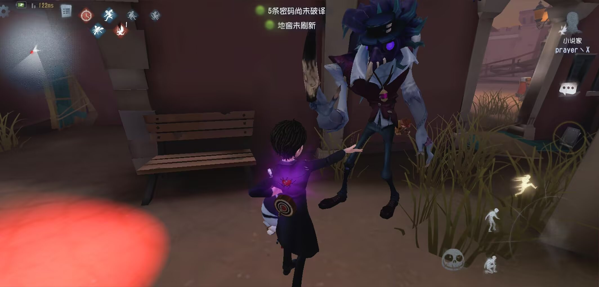
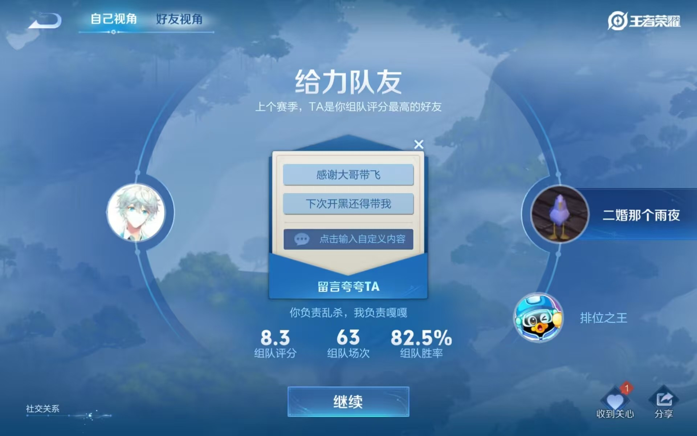
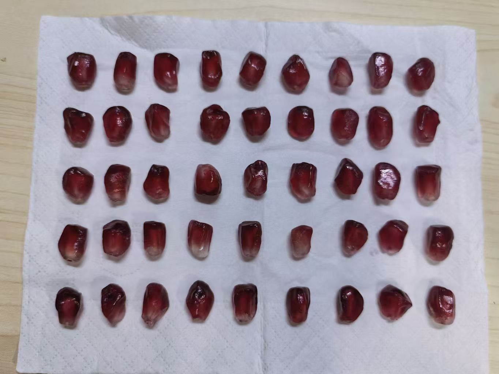
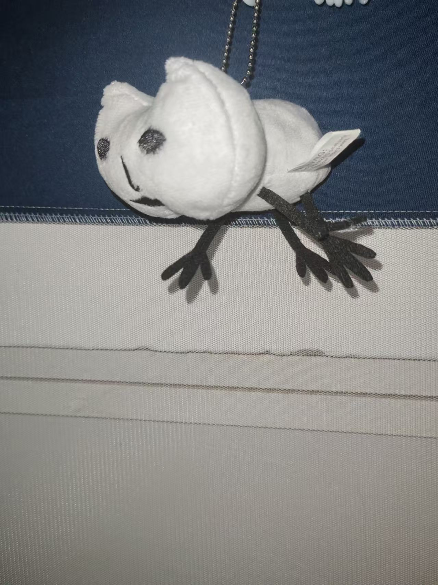
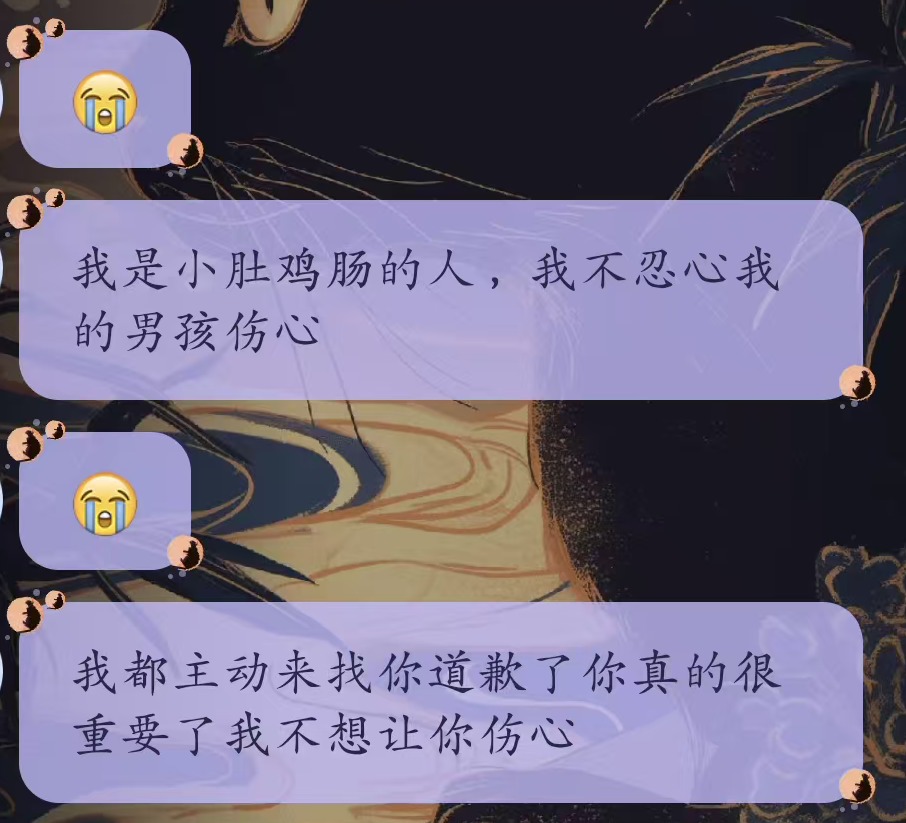
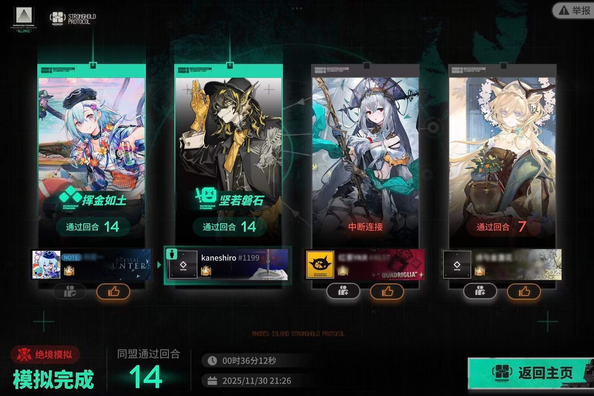
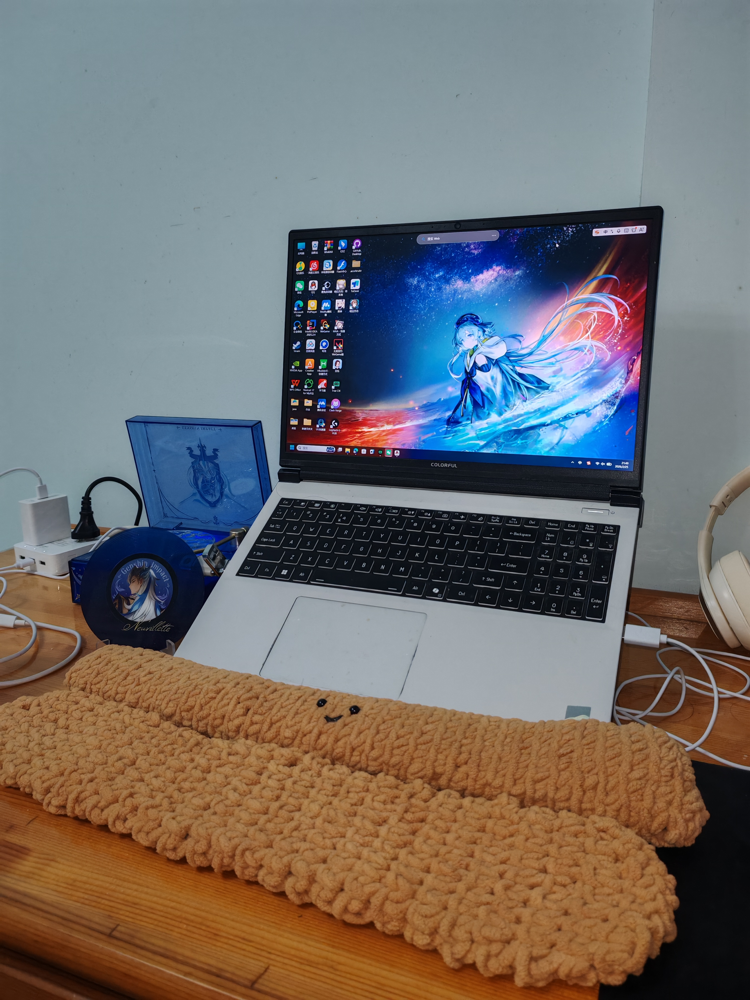

全部都不能忘！
——————————————————————
这原本是一个恋爱一百天的一个纪念小网站
但是非常不巧没有按时做完
所以他现在是一个纪念我们印象深刻的小事的小网站
看看还有没有什么漏掉的！
2025.9.6
羁绊的开始！

就是这个诡异的月亮河！
我第一次发现这个人是如此的有意思
怎么会有人单练点两个灯。。
2025.9.25
坐牢的开始！

不知道是什么驱使着我们开始打王者了！
就是这个万恶的开头让我们一直在坐牢！
但是王者荣耀真好玩
2025.10.9
石榴选美大赛！

原本只是以为你在玩梗而已！
但是真的把所有的石榴籽都摆出来让我选
好开心
2025.10.27
第一个礼物！

这是你给我的第一个礼物！
小小的很适合挂在床头！
他就这样陪睡一整个学期
2025.11.12
重要的一天！

今天原本只是平平无奇的的一把王者荣耀
结果一不小心气氛就变得很差
在我还战战兢兢不知道怎么道歉的时候
你就直接找我说了好多www
这是我的情绪第一次好好的被看见和重视
2025.11.13
小番茄！
然后就是在打电话期间偶然得知这个美味小番茄！
买之。
2025.11.15
表白了！
就这样在电话里表白聊了两个小时
其实很幸运你会接受这样不好的我
我也没想到一眨眼就过去这么久了
从那时到现在的每一天都很深刻都很开心
以后的日子也要一直在一起哟
2025.11.30
卫！(#`O′)

然后就是在一起之后很自在很幸福地卫戍协议！
本来就每天盼着和你打电话聊天的现在更是无法自拔ww
和你一起手拉手打过这么些boss也很有成就感
每天都是宿舍最晚睡的！
2026.1.21
最长的电话！
整整两个13小时的电话！
好喜欢一起打着电话随便聊天随便做点什么
好喜欢这种只是跟你在一起的松弛的状态
2026.2.2
好东西！

就是这天！
我期待了特别特别久的好东西到了！
我一直到现在每天看到他都会很开心
我还记得那天一整天都在赶路但是收到他之后立马就好了
我要把他们一直带在身边ww
以后
——————————————————————
虽然最近还是有一些小难过
但是我还是会努力和你一起开心的！
以后也想有更多这样的时候
可能看起来都是很小的事情
当时的开心却很深刻
还想和你有更多这样开心的时候！